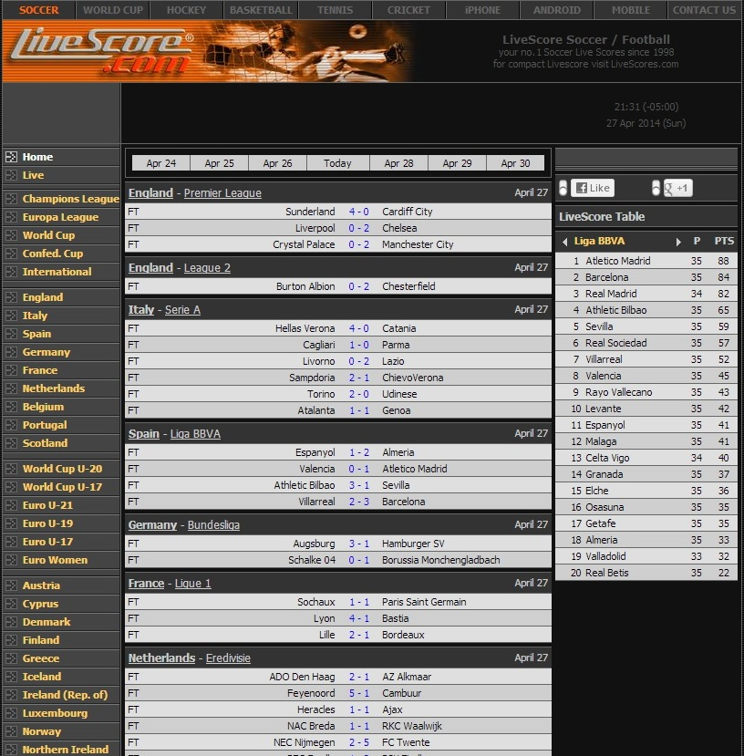

LiveScore:
- As the title says, live scores are updated directly from the source, in real-time.
- My eyes are drawn directly to the scores of the most recent matches/games. The website is very simple, on a dark theme, which does not hurt my eyes at all. Yet I can always find what I am looking for easily.
- There are many other livescore websites, however I still prefer livescore.com simply because it is simple, and has all information I need. Other websites may be fancy, colorful, but why would I care about anything rather than the score itself?
- Another good thing is the site has no ads whatsoever, that makes reading even easier.

YouTube:
- I don't know how much time I have spent on Youtube. When I don't know what to do in front of my computer, my default address is this!
- Visually the website is also pretty simple. White background, black text, with a screenshot for each video.
- Seaching for a certain video clip is easy. But most of the time I don't really know what to watch, so here comes the suggestions. They are all based on what I recently watched the most, and I just keep clicking on one after another. I don't even need the keyboard! I feel like I could stay on this website forever.
NotebookReview:
- This is the lasrgest forum about notebooks. Any kind of laptop: new/old, cheap/expensive, will all be here and most of them have a review article. Most of laptop manufacturers have technical supports who are active member of this forum. You can find tons of information, ask any question if you have trouble with the hardware. You can even find many good deals in the "Buy and Sell" sub-forum as an alternative to eBay.
- This is just a typical forum website so the design is very familiar, just like any other forum.